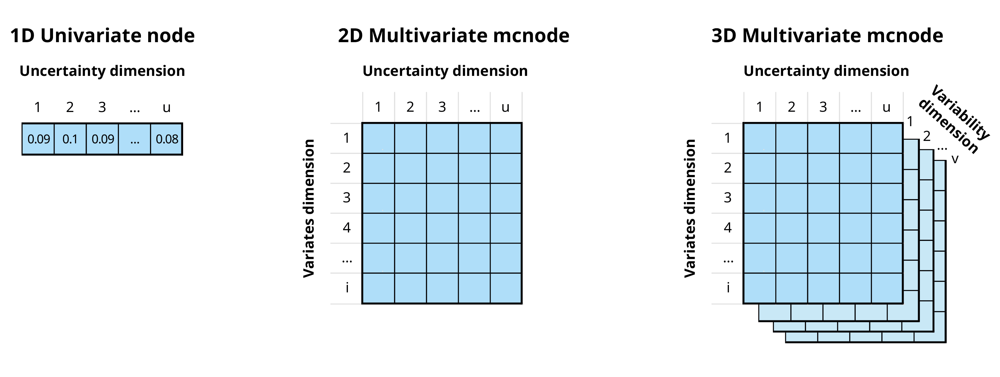
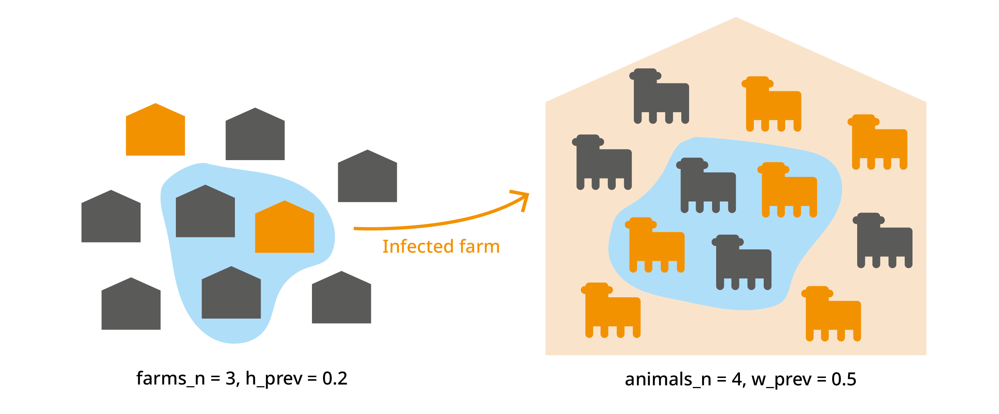
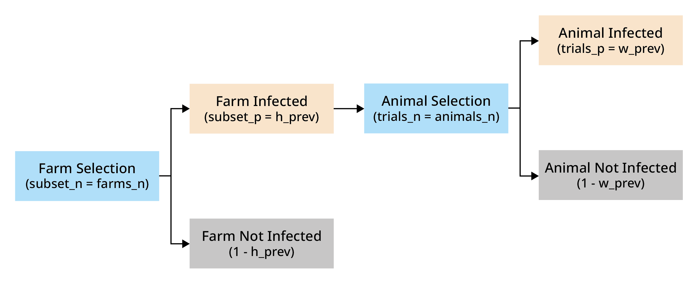

Getting started
This is a gentle and casual welcome to Monte Carlo risk analysis and
the use of mcmodule.
For a more formal approach you can read the package official vignette.
I developed this new R package because I could not find any suitable tools for creating complex risk analysis models with thousands of parameters, hundreds of cases, dozens of scenarios, and multiple pathways in R (or in any other software accessible to epidemiologists).
Formally, mcmodule is a framework for building modular
Monte Carlo risk analysis models. It extends the capabilities of
mc2d to make working with multiple risk pathways, variates,
and scenarios easier. The package includes tools for creating stochastic
objects from data frames, visualizing results, and performing
uncertainty, sensitivity, and convergence analysis.
For me, mcmodule was a little set of custom functions
that was born out of necessity and grew out of obsession. Eventually,
the effort and lessons learned in building smooth, large-scale risk
analysis in R were so great that it was something I couldn’t keep just
for our farmR!SK
project. Now, I hope this package can help other epidemiologists (and
risk modellers from other disciplines), not only to save a few hours of
work, but also to be ambitious and design complex risk pathways knowing
that it will be feasible to evaluate them in R.
Risk assessment
This section provides a brief introduction to risk assessment in R. Although this package is not intended for beginners in risk assessment, it can help you understand the logic behind mcmodule and its purpose.
A simple risk assessment
Let’s imagine we want to buy a heifer from a friend. We know their farm is infected with pathogen A, a disease that your farm is free from. To reduce risk, we plan to perform a diagnostic test before bringing the heifer to our farm. We want to calculate the probability of introducing the disease if we purchase one heifer that tests negative.
Risk assessment is a technique to estimate the probability and impact of an “adverse”1 event. It identifies the steps necessary for the event to occur and assigns them a probability. In our case, we have some uncertainty around the probability that an animal in a herd is infected and around the test sensitivity, so we want to conduct a probabilistic or stochastic risk assessment that can account for that uncertainty.
The risk assessment for our cattle purchase can be performed using
base R (2024)
random sampling functions, or mc2d (Pouillot and Delignette-Muller
2010), a package provides additional probability
distributions (such as rpert) and other useful tools for analyzing
stochastic (Monte-Carlo) simulations.
library(mc2d)
set.seed(123)
n_iterations <- 10000
# Within-herd prevalence
w_prev <- mcstoc(runif, min = 0.15, max = 0.2,
nsu = n_iterations, type="U")
# Test sensitivity
test_sensi <- mcstoc(rpert, min = 0.89, mode = 0.9, max = 0.91,
nsu = n_iterations, type="U")
# Probability an animal is tested in origin
test_origin <- mcdata(1, type="0") #Yes
# EXPRESSIONS
# Probability that an animal in an infected herd is infected (a = animal)
inf <- w_prev
# Probability an animal is tested and is a false negative
# (test specificity assumed to be 100%)
false_neg <- inf * test_origin * (1 - test_sensi)
# Probability an animal is not tested
no_test <- inf * (1 - test_origin)
# Probability an animal is not detected
no_detect <- false_neg + no_test
mc_model<-mc(w_prev, inf, test_origin, test_sensi,
false_neg, no_test, no_detect)
# RESULT
hist(mc_model)
no_detect## node mode nsv nsu nva variate min mean median max Nas type outm
## 1 x numeric 1 10000 1 1 0.0138 0.0175 0.0174 0.0218 0 U eachMultiple risk assessments at once
In the previous example, we calculated the risk for one specific case. However, we know that this farm is also positive for pathogen B, so it would be also interesting to calculate the risk of introducing it as well. Pathogen B has different within-herd prevalence and test sensitivity than Pathogen A.
To estimate the risk for both pathogens with our previous models, we could:
Copy and paste the code twice with different parameters (against all good coding practices)
Wrap the code in a function and call it twice using each pathogen’s parameters as arguments
Create a loop
While these options work, they become messy or computationally intensive when the number of parameters or different situations to simulate increases.
The package mc2d offers a clever solution to this
scalability problem: variates. In this package, parameters are stored as
mcnode class objects. These objects are arrays of
numbers that represent random variables and have three dimensions:
variability × uncertainty × variates.

In the previous example, our stochastic nodes only had uncertainty dimension. However, we can now use the variates dimension to calculate the risk of introduction of both pathogens at the same time.
set.seed(123)
n_iterations <- 10000
# Within-herd prevalence
w_prev_min <- mcdata(c(a = 0.15, b = 0.45), nvariates = 2, type="0")
w_prev_max <- mcdata(c(a = 0.2, b = 0.6), nvariates = 2, type="0")
w_prev <- mcstoc(runif, min = w_prev_min, max = w_prev_max,
nsu = n_iterations, nvariates = 2, type="U")
# Test sensitivity
test_sensi_min <- mcdata(c(a = 0.89, b = 0.80), nvariates = 2, type = "0")
test_sensi_mode <- mcdata(c(a = 0.9, b = 0.85), nvariates = 2, type = "0")
test_sensi_max <- mcdata(c(a = 0.91, b = 0.90), nvariates = 2, type = "0")
test_sensi <- mcstoc(rpert, min = test_sensi_min,
mode = test_sensi_mode, max = test_sensi_max,
nsu = n_iterations, nvariates = 2, type="U")
# Probability an animal is tested in origin
test_origin <- mcdata(c(a = 1, b = 1), nvariates = 2, type="0")
# EXPRESSIONS
# Probability that an animal in an infected herd is infected (a = animal)
inf <- w_prev
# Probability an animal is tested and is a false negative
# (test specificity assumed to be 100%)
false_neg <- inf * test_origin * (1 - test_sensi)
# Probability an animal is not tested
no_test <- inf * (1 - test_origin)
# Probability an animal is not detected
no_detect <- false_neg + no_test
mc_model<-mc(w_prev, inf, test_origin, test_sensi,
false_neg, no_test, no_detect)
# RESULT
no_detect## node mode nsv nsu nva variate min mean median max Nas type outm
## 1 x numeric 1 10000 2 1 0.0139 0.0175 0.0174 0.0217 0 U each
## 2 x numeric 1 10000 2 2 0.0477 0.0787 0.0783 0.1178 0 U eachInstead of manually typing the parameter values, you can also use
columns from a data table in mcdata(). A useful template
for setting up risk analysis models using mc2d, with custom
functions to facilitate data manipulation and visualization, can be
found in this repository: https://github.com/NataliaCiria/risk_analysis_template.
When to use mcmodule?
The mc2d multivariate approach works well for basic
multivariate risk analysis. However, if instead of purchasing one cow,
you’re dealing with multiple cattle purchases, from different farms,
across different pathogens, scenarios, and age categories, or modeling
multiple risk pathways with different what-if scenarios, this approach
becomes unwieldy.
mcmodule addresses these challenges by providing
functions for multivariate operations and
modular management of the risk model. It automates the
process of creating mcnodes and assigns metadata to them (making it easy
to identify which variate corresponds to which data row). Thanks to this
mcnode metadata, it enables row-matching between nodes with different
variates, combines probabilities across variates, and calculates
multilevel trials. As your risk analysis grows, you can create separate
modules for different pathways, each with independent parameters,
expressions, and scenarios that can later be connected into a complete
model.
This package is particularly useful for:
Working with complex models that involve multiple pathways, pathogens, or scenarios simultaneously
Dealing with large parameter sets (hundreds or thousands of parameters)
Handling different numbers of variates across different parts of your model that need to be combined
Creating modular risk assessments where different components need to be developed independently but later integrated (for example in collaborative projects)
Performing sophisticated sensitivity analyses across multiple model components
However, for simpler analyses, such as single pathway models,
exploratory work, small models with few parameters, one-off analyses or
learning risk assessment mcmodule’s additional structure
may be unnecessary.
Installing mcmodule
Now let’s explore this new package! It’s about to be submitted to CRAN, but since it’s not there yet, we’ll install it from GitHub instead.
# install.packages("devtools")
devtools::install_github("NataliaCiria/mcmodule")And we load the package in our R session. Easy-peasy, ready to go!
Other recommended packages to load along with mcmodule are:
Building an mcmodule
To quickly understand the key components of an mcmodule, we’ll start by building one using the animal imports example included in the package. For a more detailed view of each component, refer to the model elements section in the package vignette.
Data
Let’s consider a scenario where we want to evaluate the risk of introducing pathogen A and pathogen B into our region from animal imports from different regions (north, south, east, and west). We have gathered the following data:
-
animal_imports: number of animal imports with their mean and standard deviation values per region, and the number of exporting farms in each region.animal_imports## origin farms_n animals_n_mean animals_n_sd ## 1 nord 5 100 6 ## 2 south 10 130 10 ## 3 east 7 140 12 -
prevalence_region: estimates for both herd and within-herd prevalence ranges for pathogens A and B, as well as an indicator of how often tests are performed in originprevalence_region## pathogen origin h_prev_min h_prev_max w_prev_min w_prev_max test_origin ## 1 a nord 0.08 0.10 0.15 0.2 sometimes ## 2 a south 0.02 0.05 0.15 0.2 sometimes ## 3 a east 0.10 0.15 0.15 0.2 never ## 4 b nord 0.50 0.70 0.45 0.6 always ## 5 b south 0.25 0.30 0.37 0.4 sometimes ## 6 b east 0.30 0.50 0.45 0.6 unknown -
test_sensitivity: estimates of test sensitivity values for pathogen A and Btest_sensitivity## pathogen test_sensi_min test_sensi_mode test_sensi_max ## 1 a 0.89 0.90 0.91 ## 2 b 0.80 0.85 0.90
Now we will use dplyr::left_join() to create our imports
module data:
imports_data<-prevalence_region%>%
left_join(animal_imports)%>%
left_join(test_sensitivity)%>%
relocate(pathogen, origin, test_origin)## Joining with `by = join_by(origin)`
## Joining with `by = join_by(pathogen)`Data keys
From now on we will use only the merged imports_data
table. However, it is useful to understand which input dataset each
parameter comes from, as each dataset provides information for different
keys. In this context, keys are fields that (combined) uniquely identify
each row in a table. In our example:
animal_importsprovided information by region of"origin"prevalence_regionprovided information by"pathogen"and region of"origin"test_sensitivityprovided information by"pathogen"only
The resulting merged table, imports_data, will therefore
have two keys: "pathogen" and "origin".
However, not all parameters will use both keys, for example,
"test_sensi" only has information by
"pathogen". Knowing the keys for each parameter is crucial
when performing multivariate operations, such as calculating
totals.
To make these relationships explicit in the model, we need to provide the data keys. These are defined in a list with one element for each input dataset, specifying both the columns and the keys for each dataset.
mcnodes table
With values and keys established, we still need some information to build our stochastic parameters. The mcnode table specifies how to build mcnodes from the data table. It specifies which parameters are included in the model, the type of parameters (those with an mc_func are stochastic), and what columns to look for in the data table to build this mcnodes (the name of the mcnode, or another variable in the data columns), as well as transformations that are usefull to encode categorical data values into mcnodes that must always be numeric.
mcnode: Name of the Monte Carlo node (required)
description: Description of the parameter
mc_func: Probability distribution
from_variable: Column name, if it comes from a column with a name different to the mcnode
transformation: Transformation to be applied to the original column values
sensi_analysis: Whether to include in sensitivity analysis
Here we have the imports_mctable for our example. While
the mctable can be hard-coded in R, it’s more efficient to prepare it in
a CSV or other external file. This approach also allows the table to be
included as part of the model documentation.
| mcnode | description | mc_func | from_variable | transformation | sensi_analysis |
|---|---|---|---|---|---|
| h_prev | Herd prevalence | runif | NA | NA | TRUE |
| w_prev | Within herd prevalence | runif | NA | NA | TRUE |
| test_sensi | Test sensitivity | rpert | NA | NA | TRUE |
| farms_n | Number of farms exporting animals | NA | NA | NA | FALSE |
| animals_n | Number of animals exported per farm | rnorm | NA | NA | FALSE |
| test_origin_unk | Unknown probability of the animals being tested in origin (true = unknown) | NA | test_origin | value==“unknown” | FALSE |
| test_origin | Probability of the animals being tested in origin | NA | NA | ifelse(value == “always”, 1, ifelse(value == “sometimes”, 0.5, ifelse(value == “never”, 0, NA))) | FALSE |
The data table and the mctable must complement each other:
mcnodes without a
mc_func(likefarms_n), needs the matching column name ("farms_n") in the data table-
mcnodes with an
mc_func, you need columns for each probability distribution argument in the data table. For example:h_prevwithrunifdistribution requires"h_prev_min"and"h_prev_max"animals_nwithrnormdistribution requires"animals_n_mean"and"animals_n_sd"
For encoding categorical variables as mcnodes (or any other data
transformation), you can use any R code with value as a
placeholder for the mcnode name or column name (specified in
from_variable)
Expressions
Finally, we need to write the model’s mathematical expression. This
expressions should ideally include only arithmetic operations, not R
functions (with some exceptions that will be covered later in “tricks
and tweaks”). We’ll wrap them using quote() so they
aren’t executed immediately but stored for later evaluation with
eval_model().
imports_exp<-quote({
# Probability that an animal in an infected herd is infected (a = animal)
inf <- w_prev
# Probability an animal is tested and is a false negative
# (test specificity assumed to be 100%)
false_neg <- inf * test_origin * (1 - test_sensi)
# Probability an animal is not tested
no_test <- inf * (1 - test_origin)
# Probability an animal is not detected
no_detect <- false_neg + no_test
})Evaluating an mcmodule
With all components in place, we’re now ready to create our first
mcmodule using eval_module().
imports<-eval_module(
exp = c(imports=imports_exp),
data = imports_data,
mctable = imports_mctable,
data_keys = imports_data_keys
)##
## imports evaluated##
## mcmodule created (expressions: imports)
class(imports)## [1] "mcmodule"An mcmodule is an S3 object class, and it is essentially a list that contains all risk assessment components in a structured format.
names(imports)## [1] "data" "exp" "node_list" "modules"The mcmodule contains the input data and mathematical
expressions (exp) that ensure traceability. All input and
calculated parameters are stored in node_list. Each node
contains not only the mcnode itself but also important metadata: node
type (input or output), source dataset and columns, keys, calculation
method, and more. The specific metadata varies depending on the node’s
characteristics. Here are a few examples:
imports$node_list$w_prev## $type
## [1] "in_node"
##
## $mc_func
## [1] "runif"
##
## $description
## [1] "Within herd prevalence"
##
## $inputs_col
## [1] "w_prev_min" "w_prev_max"
##
## $input_dataset
## [1] "prevalence_region"
##
## $keys
## [1] "pathogen" "origin"
##
## $module
## [1] "imports"
##
## $mc_name
## [1] "w_prev"
##
## $mcnode
## node mode nsv nsu nva variate min mean median max Nas type outm
## 1 x numeric 1001 1 6 1 0.15 0.175 0.175 0.2 0 V each
## 2 x numeric 1001 1 6 2 0.15 0.175 0.173 0.2 0 V each
## 3 x numeric 1001 1 6 3 0.15 0.176 0.176 0.2 0 V each
## 4 x numeric 1001 1 6 4 0.45 0.524 0.524 0.6 0 V each
## 5 x numeric 1001 1 6 5 0.37 0.385 0.385 0.4 0 V each
## 6 x numeric 1001 1 6 6 0.45 0.525 0.525 0.6 0 V each
##
## $data_name
## [1] "imports_data"
imports$node_list$no_detect## $node_exp
## [1] "false_neg + no_test"
##
## $type
## [1] "out_node"
##
## $inputs
## [1] "false_neg" "no_test"
##
## $module
## [1] "imports"
##
## $mc_name
## [1] "no_detect"
##
## $keys
## [1] "pathogen" "origin"
##
## $param
## [1] "false_neg" "no_test"
##
## $mcnode
## node mode nsv nsu nva variate min mean median max Nas type outm
## 1 x numeric 1001 1 6 1 0.0823 0.0961 0.0962 0.111 0 V each
## 2 x numeric 1001 1 6 2 0.0821 0.0960 0.0954 0.110 0 V each
## 3 x numeric 1001 1 6 3 0.1501 0.1758 0.1758 0.200 0 V each
## 4 x numeric 1001 1 6 4 0.0473 0.0789 0.0783 0.113 0 V each
## 5 x numeric 1001 1 6 5 0.2056 0.2216 0.2216 0.237 0 V each
## 6 x numeric 1001 1 6 6 0.4501 0.5250 0.5251 0.600 0 V each
##
## $data_name
## [1] "imports_data"And now that we have an mcmodule, we can begin exploring its possibilities!
Working with an mcmodule
Visualizing
We can visualize an mc_module with the mc_network() function. For
this you will need to have igraph (Csardi and Nepusz
2006) and visNetwork (Almende B. V. and Benoit Thieurmel
2025)installed.
In these visualizations, input datasets appear in blue, input columns in dark-grey-blue, input mcnodes in grey, output mcnodes in green, and total mcnodes (as we will see later) in orange. The numbers displayed when clicked correspond to the first variate of each mcnode.
#TODO: why inf is not conected to no_test, false_neg??
mc_network(imports)Summarizing
In the imports mcmodule, we can already see the raw mcnode results
for the probability of an imported animal not being detected
(no_detect). However, it’s difficult to determine which
pathogen or region these results refer to. The mc_summary()
function solves this problem by linking mcnode results with their key
columns in the data.
Note that while the printed summary looks similar to the raw mcnode, it’s actually just a dataframe containing statistical measures, whereas the actual mcnode is a large array of numbers with dimensions (uncertainty × 1 × variates),
mc_summary(mcmodule = imports, mc_name = "no_detect")## mc_name pathogen origin mean sd Min 2.5%
## 1 no_detect a nord 0.09606117 0.007846092 0.08229964 0.08315677
## 2 no_detect a south 0.09600480 0.007853480 0.08211744 0.08335069
## 3 no_detect a east 0.17576742 0.014232780 0.15012421 0.15143865
## 4 no_detect b nord 0.07893257 0.011945867 0.04733962 0.05755650
## 5 no_detect b south 0.22158127 0.006342677 0.20562155 0.21003466
## 6 no_detect b east 0.52501566 0.044450307 0.45010788 0.45180481
## 25% 50% 75% 97.5% Max nsv Na's
## 1 0.08935080 0.09624474 0.10277116 0.1091880 0.1106308 1001 0
## 2 0.08962080 0.09541026 0.10270101 0.1094114 0.1103462 1001 0
## 3 0.16410730 0.17582400 0.18797380 0.1986464 0.1999425 1001 0
## 4 0.06985123 0.07826653 0.08704084 0.1028250 0.1130751 1001 0
## 5 0.21693959 0.22159777 0.22614771 0.2338717 0.2372087 1001 0
## 6 0.48700830 0.52505400 0.56319271 0.5974721 0.5999797 1001 0Calculating totals
Single-level trials
In imports, we have the probability that an infected
animal from an infected farm goes undetected ("no_detect").
When all animals (in a variate) have the same probability, we can use
the total number of animals selected per farm ("animals_n")
as the number of trials (trials_n) to determine the
probability that at least one infected animal from one farm is not
detected (no_detect_set).
Note that while
"animals_n"is not found as an mcnode inimports(it was not used inimports$exp), it can be automatically generated intrial_totals()because it’s included inimports_mctableand the required data exists inimports$data.
# Probability of at least one imported animal from an infected herd is not detected
imports <- trial_totals(
mcmodule = imports,
mc_names = "no_detect",
trials_n = "animals_n",
mctable = imports_mctable
)Note that this function returns an mcmodule with some additional nodes. Total nodes have special metadata fields, and always include a summary by default.
imports$node_list$no_detect_set$summary## mc_name pathogen origin mean sd Min 2.5%
## 1 no_detect_set a nord 0.9999321 7.013890e-05 0.9994040 0.9997494
## 2 no_detect_set a south 0.9999946 9.023932e-06 0.9999207 0.9999693
## 3 no_detect_set a east 1.0000000 7.143640e-10 1.0000000 1.0000000
## 4 no_detect_set b nord 0.9993863 9.111167e-04 0.9878926 0.9969435
## 5 no_detect_set b south 1.0000000 8.284954e-13 1.0000000 1.0000000
## 6 no_detect_set b east 1.0000000 0.000000e+00 1.0000000 1.0000000
## 25% 50% 75% 97.5% Max nsv Na's
## 1 0.9999111 0.9999592 0.9999798 0.9999942 0.9999990 1001 0
## 2 0.9999940 0.9999979 0.9999993 0.9999999 1.0000000 1001 0
## 3 1.0000000 1.0000000 1.0000000 1.0000000 1.0000000 1001 0
## 4 0.9992577 0.9997108 0.9998988 0.9999820 0.9999967 1001 0
## 5 1.0000000 1.0000000 1.0000000 1.0000000 1.0000000 1001 0
## 6 1.0000000 1.0000000 1.0000000 1.0000000 1.0000000 1001 0Multilevel trials
Simple multilevel
When considering animals (trials_n) from different farms (subset_n), we must account for both the farm’s probability of being infected (subset_p) and the individual animal’s probability of being infected (trial_p).


# Probability of at least one animal from at least one herd being is not detected (probability of a herd being infected: h_prev)
imports <- trial_totals(
mcmodule = imports,
mc_names = "no_detect",
trials_n = "animals_n",
subsets_n = "farms_n",
subsets_p = "h_prev",
mctable = imports_mctable
)
# Result
imports$node_list$no_detect_set## $mcnode
## node mode nsv nsu nva variate min mean median max Nas type outm
## 1 x numeric 1001 1 6 1 0.341 0.375 0.375 0.409 0 V each
## 2 x numeric 1001 1 6 2 0.183 0.300 0.301 0.401 0 V each
## 3 x numeric 1001 1 6 3 0.522 0.603 0.601 0.679 0 V each
## 4 x numeric 1001 1 6 4 0.969 0.988 0.990 0.998 0 V each
## 5 x numeric 1001 1 6 5 0.944 0.959 0.959 0.972 0 V each
## 6 x numeric 1001 1 6 6 0.918 0.967 0.972 0.992 0 V each
##
## $param
## [1] "no_detect" "animals_n" "farms_n" "h_prev"
##
## $inputs
## [1] "no_detect" "animals_n" "farms_n" "h_prev"
##
## $description
## [1] "Probability of at least one no_detect in a set (set)"
##
## $node_expression
## [1] "1-(1-h_prev*(1-(1-no_detect)^animals_n))^farms_n"
##
## $type
## [1] "total"
##
## $module
## [1] "imports"
##
## $keys
## [1] "pathogen" "origin"
##
## $scenario
## NULL
##
## $data_name
## [1] "imports_data"
##
## $prefix
## NULL
##
## $total_type
## [1] "multilevel set prob"
##
## $summary
## mc_name pathogen origin mean sd Min 2.5%
## 1 no_detect_set a nord 0.3750658 0.019423805 0.3409096 0.3426622
## 2 no_detect_set a south 0.2996147 0.062082135 0.1831011 0.1880185
## 3 no_detect_set a east 0.6033211 0.044910761 0.5223697 0.5281263
## 4 no_detect_set b nord 0.9879346 0.008092032 0.9685386 0.9700096
## 5 no_detect_set b south 0.9591725 0.008198048 0.9436984 0.9446557
## 6 no_detect_set b east 0.9666202 0.020854527 0.9178026 0.9227233
## 25% 50% 75% 97.5% Max nsv Na's
## 1 0.3584187 0.3754377 0.3919736 0.4074487 0.4093251 1001 0
## 2 0.2502976 0.3010584 0.3531750 0.3983723 0.4010640 1001 0
## 3 0.5654920 0.6014358 0.6445998 0.6758861 0.6789184 1001 0
## 4 0.9820674 0.9903868 0.9947567 0.9972808 0.9975589 1001 0
## 5 0.9519908 0.9594851 0.9664197 0.9713592 0.9717380 1001 0
## 6 0.9515323 0.9719872 0.9843585 0.9916945 0.9921818 1001 0Working with multiple mcmodules
Inputs from previous mcmodules
Now that we know the probability of an infected imported animal not being detected, we want to estimate the probability that an imported animal ends up infecting another animal via direct contact
# Create pathogen data table
transmission_data <-data.frame(pathogen=c("a","b"),
inf_dc_min=c(0.05,0.3),
inf_dc_max=c(0.08,0.4))
transmission_data_keys <-list(transmission_data = list(cols=c("pathogen", "inf_dc_min","inf_dc_max"),
keys=c("pathogen")))
transmission_mctable <- data.frame(mcnode = c("inf_dc"),
description = c("Probability of infection via direct contact"),
mc_func = c("runif"),
from_variable = c(NA),
transformation = c(NA),
sensi_analysis = c(FALSE))
dir_contact_exp<-quote({
dir_contact <- no_detect * inf_dc
})
transmission <- eval_module(
exp = c(dir_contact = dir_contact_exp),
data = transmission_data,
mctable =transmission_mctable,
data_keys = transmission_data_keys,
prev_mcmodule = imports)## Group by: pathogen## no_detect prev dim: [1001, 1, 6], new dim: [1001, 1, 6], 0 null matches## data prev dim: [2, 3], new dim: [6, 3], 0 null matches##
## dir_contact evaluated##
## mcmodule created (expressions: dir_contact)Combining mcmodules
intro<-combine_modules(imports,transmission)
#intro<-at_least_one(intro, c("no_detect","dir_contact"), name="total")Analysing mcmodule models
Tricks and tweaks
Remove mcnode NAs
sample_mcnode <- mcstoc(runif,
min = mcdata(c(NA, 0.2, -Inf), type = "0", nvariates = 3),
max = mcdata(c(NA, 0.3, Inf), type = "0", nvariates = 3),
nvariates = 3
)## Warning in (function (n, min = 0, max = 1) : NAs produced## Warning in (function (n, min = 0, max = 1) : NAs produced
# Replace NA and Inf with 0
clean_mcnode <- mcnode_na_rm(sample_mcnode)Useful to include in expressions were there is a division with a
denominator can potentially be 0 and it will return Inf or
NaN, but we actually want that parameter to be 0.